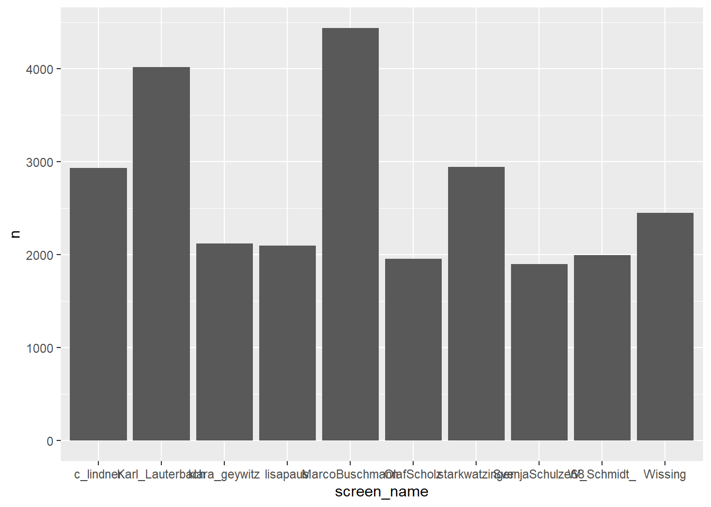
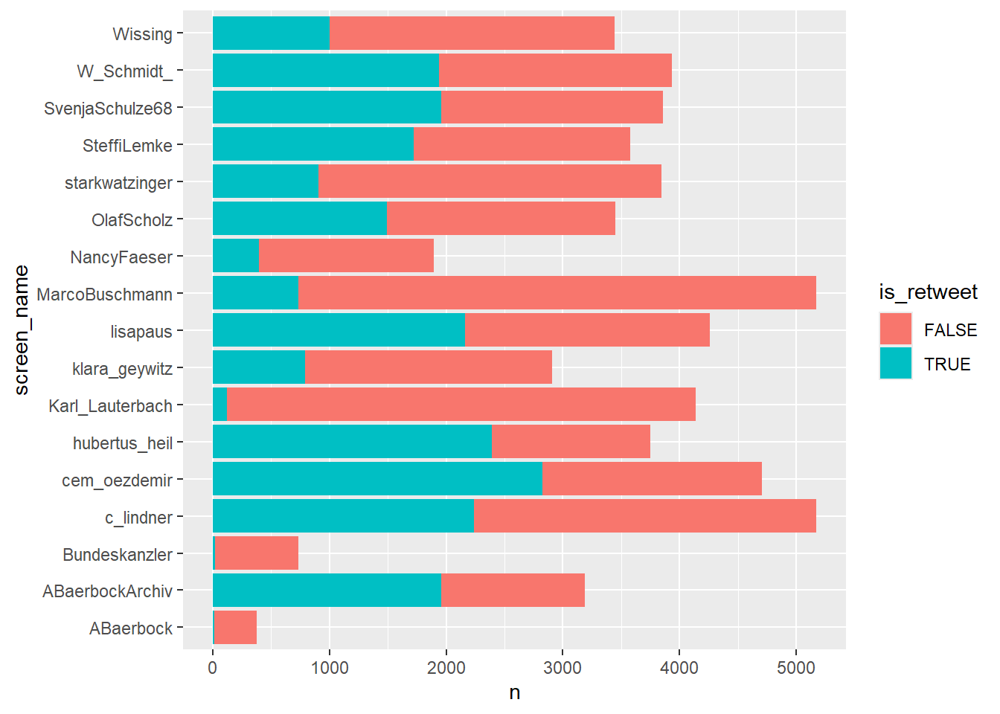
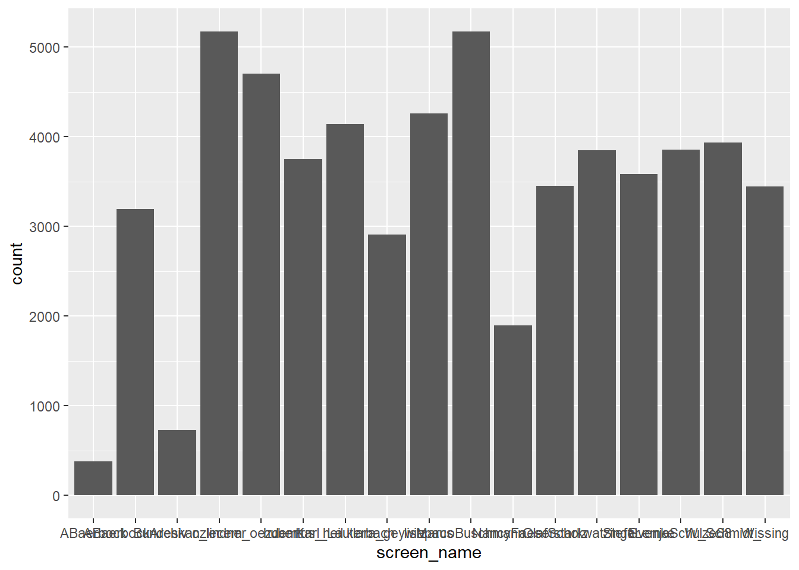
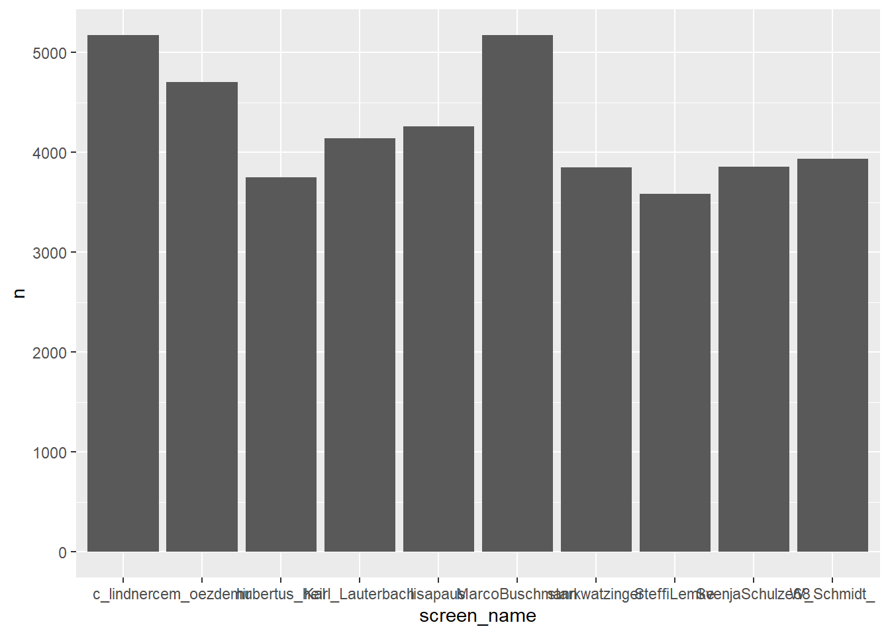
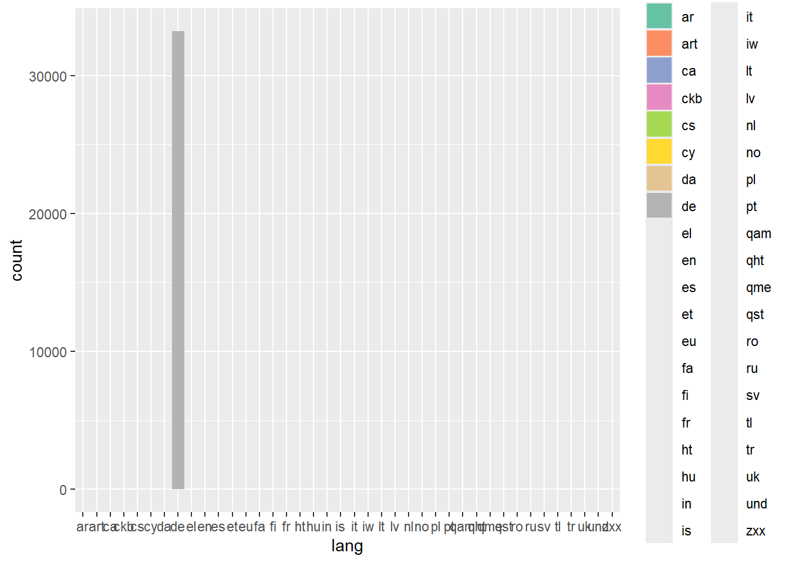
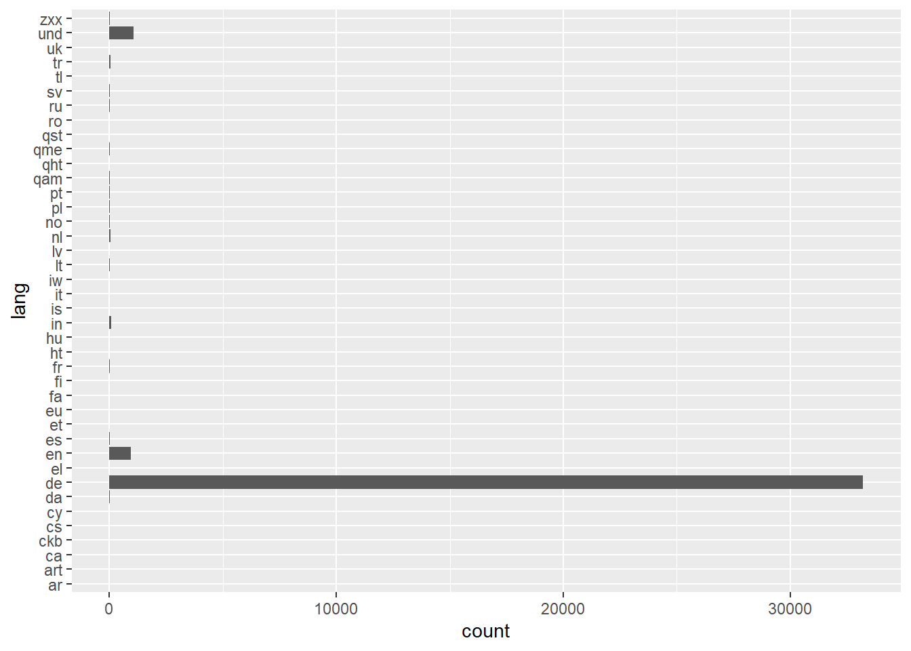
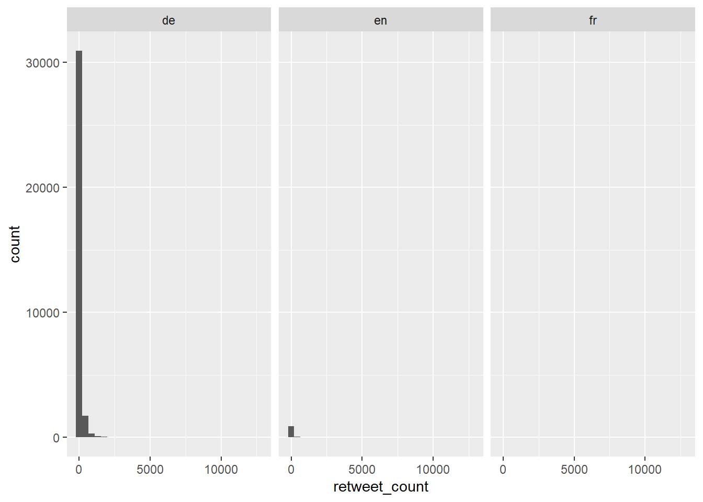
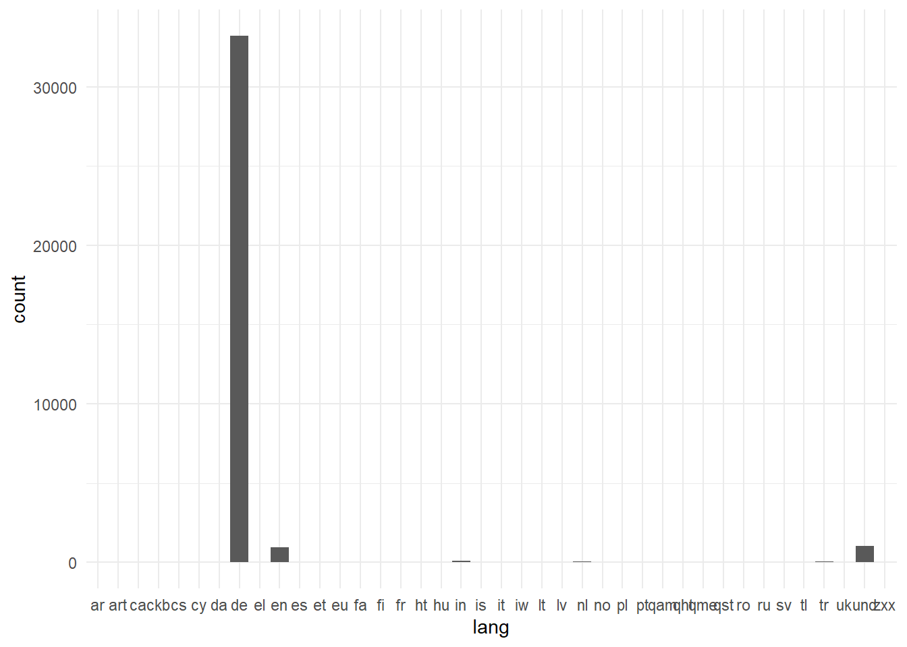
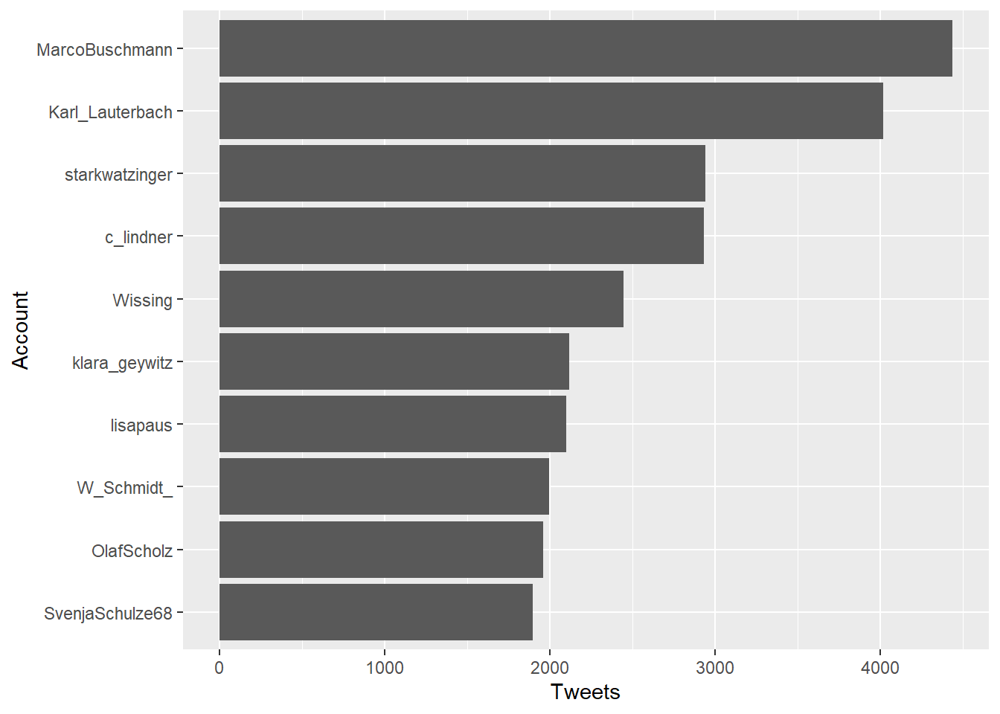

top_accounts <- tweets |>
count(screen_name, sort = TRUE) |>
head(10)14 Grammar of Graphics
Bis hierhin habt ihr gelernt, Daten zu laden, zu filtern, zu verändern und zusammenzufassen. Jetzt kommt der Schritt, auf den viele am meisten warten: die Visualisierung. Denn ein gutes Diagramm zeigt in Sekunden, wofür ihr sonst Dutzende Zahlen lesen müsstet.
In R nutzen wir dafür ggplot2, das meistgenutzte Visualisierungspaket. Der Name steht für Grammar of Graphics, ein Konzept, das die Art und Weise, wie wir über Diagramme denken, grundlegend verändert hat. Statt einzelne Diagrammtypen auswendig zu lernen (Balkendiagramm, Liniendiagramm, Streudiagramm …), beschreibt ihr ein Diagramm als Kombination aus Bausteinen. Und genau diese Denkweise macht ggplot2 so mächtig.
- Was ist die Grammar of Graphics, und warum denken wir in Ebenen statt in Diagrammtypen?
- Welche drei Bausteine braucht jedes Diagramm in
ggplot2? - Welche weiteren Ebenen gibt es, und wann spielen sie eine Rolle?
14.1 Die Idee
Die Grammar of Graphics stammt aus dem Buch The Grammar of Graphics von Leland Wilkinson (1999). Die Grundidee: Jedes statistische Diagramm lässt sich als Kombination unabhängiger Bausteine beschreiben, genau wie ein Satz in einer natürlichen Sprache aus Subjekt, Verb und Objekt besteht.
Hadley Wickham hat diese Idee aufgegriffen und in ggplot2 umgesetzt. In ggplot2 baut ihr ein Diagramm Schicht für Schicht auf, indem ihr Bausteine mit dem +-Operator verbindet.
Die wichtigste Erkenntnis dabei ist: Ein Balkendiagramm und ein Liniendiagramm unterscheiden sich nicht grundlegend. Beide haben Daten, eine Zuordnung von Variablen zu visuellen Eigenschaften und eine geometrische Form. Der einzige Unterschied ist die Form: Balken statt Linie. Wenn ihr das verinnerlicht habt, könnt ihr jedes Diagramm bauen, das ihr euch vorstellen könnt.
14.2 Die drei essenziellen Bausteine
Jedes Diagramm in ggplot2 braucht exakt drei Dinge:
- Daten (data): Welcher Datensatz wird dargestellt?
- Zuordnungen (aesthetic mappings): Welche Variable wird auf welche visuelle Eigenschaft abgebildet?
- Geometrien (geoms): Welche geometrische Form stellt die Daten dar?
Schauen wir uns das an einem Beispiel an. Wir wollen wissen, welche Accounts am meisten twittern. Dafür bereiten wir kurz die Top-10-Accounts vor und zeigen sie als Balkendiagramm:
top_accounts |>
ggplot() +
aes(x = screen_name, y = n) +
geom_col()
Drei Zeilen, drei Bausteine, drei +:
-
top_accounts |> ggplot()übergibt den Datensatz per Pipe. -
aes(x = screen_name, y = n)ist das Mapping: Der Accountname auf die x-Achse, die Anzahl auf die y-Achse. -
geom_col()zeichnet Balken mit den vorberechneten Werten.
Das Ergebnis sieht noch nicht besonders schön aus (die Namen überlappen sich, die Reihenfolge ist alphabetisch statt nach Häufigkeit), aber es ist ein vollständiges Diagramm. Alles, was danach kommt, ist Feinschliff.
TippWarum diese Schreibweise?
In vielen Tutorials seht ihr aes() innerhalb von ggplot(), zum Beispiel ggplot(data, aes(x = ..., y = ...)). Das funktioniert genauso, denn ggplot2 ist sehr flexibel. In diesem Buch schreiben wir jede Ebene als eigenen Baustein mit +, weil es die Idee der Grammar of Graphics am deutlichsten zeigt: Jede Zeile ist eine eigene Schicht, die ihr unabhängig ändern, entfernen oder ersetzen könnt.
Daten
Der Datensatz ist immer ein Tibble oder Data Frame. Ihr übergebt ihn per Pipe an ggplot(). Oft kommt er direkt aus einer Aufbereitungskette:

Beachtet den Wechsel: Innerhalb der Datenaufbereitung nutzt ihr |>, aber ab ggplot() wechselt ihr zu +. Das liegt daran, dass ggplot2 seine eigene Verkettungslogik hat. Das + fügt Ebenen zum Diagramm hinzu.
TippPipe und Plus
Solange ihr mit dem Datensatz arbeitet, pipt ihr (|>). Sobald ihr am Diagramm arbeitet, plust ihr (+). Die Grenze ist ggplot().
Aesthetic Mappings
Das Mapping (aes()) ist das Herzstück. Es sagt ggplot2, welche Variable auf welche visuelle Eigenschaft abgebildet wird. Die häufigsten Aesthetics sind:
| Aesthetic | Beschreibung |
|---|---|
x |
Position auf der x-Achse |
y |
Position auf der y-Achse |
color |
Farbe (Linien, Punkte) |
fill |
Füllfarbe (Balken, Flächen) |
size |
Größe |
shape |
Form (Punkte) |
alpha |
Transparenz |
Im Beispiel oben haben wir x und y verwendet. Probieren wir ein Beispiel mit fill, um die Balken nach einer zweiten Variable einzufärben:
tweets |>
count(screen_name, is_retweet) |>
ggplot() +
aes(x = screen_name, y = n, fill = is_retweet) +
geom_col() +
coord_flip()

Jetzt sehen wir für jeden Account, wie viele Original-Tweets und wie viele Retweets es gibt. ggplot2 erstellt automatisch eine Legende. Das ist die Stärke des Mapping-Konzepts: Ihr beschreibt was dargestellt werden soll, nicht wie es aussehen soll.
Geometrien
Die Geometrie bestimmt die visuelle Form. Jede geom_*-Funktion zeichnet eine andere Art von Grafik. Hier sind die wichtigsten:
| Geom | Darstellung | Typischer Einsatz |
|---|---|---|
geom_bar() |
Balken | Häufigkeiten zählen |
geom_col() |
Balken | Vorberechnete Werte darstellen |
geom_point() |
Punkte | Streudiagramme |
geom_line() |
Linien | Zeitreihen |
geom_histogram() |
Histogramm | Verteilungen |
geom_boxplot() |
Boxplot | Verteilungsvergleiche |
Der Unterschied zwischen geom_bar() und geom_col() ist wichtig: geom_bar() zählt die Häufigkeit selbst, geom_col() erwartet, dass ihr den y-Wert schon berechnet habt.
tweets |>
ggplot() +
aes(x = screen_name) +
geom_bar()

Hier zählt geom_bar() die Häufigkeit jedes Accountnamens selbst. Das Ergebnis ist unübersichtlich, weil es sehr viele Accounts gibt. In der Praxis bereitet ihr die Daten deshalb vorher auf und nutzt geom_col():
top_accounts |>
ggplot() +
aes(x = screen_name, y = n) +
geom_col()

Abbildung: Drei Karten nebeneinander, die die drei essenziellen Bausteine zeigen. Karte 1: “Data” mit einem Tabellensymbol und dem Label “top_accounts”. Karte 2: “Mapping” mit dem Label “aes(x = screen_name, y = n)” und Pfeilen von den Variablen zu den Achsen. Karte 3: “Geom” mit dem Label “geom_col()” und einer kleinen Balkengrafik. Unter den drei Karten steht ein Pluszeichen zwischen jeder Karte, und darunter das fertige Diagramm.
14.3 Die weiteren Ebenen
Neben den drei essenziellen Bausteinen kennt die Grammar of Graphics noch weitere Ebenen. Diese sind optional und dienen dazu, das Diagramm zu verfeinern. Ihr müsst sie nicht für jedes Diagramm kennen, aber es hilft zu wissen, dass sie existieren.
Statistische Transformationen
Manchmal wollt ihr die Daten nicht direkt darstellen, sondern erst eine statistische Zusammenfassung berechnen. Tatsächlich tut geom_bar() genau das bereits: Es zählt die Häufigkeiten für euch. Hinter jeder Geometrie steckt eine statistische Transformation (stat).
In den meisten Fällen müsst ihr euch darum nicht kümmern, weil die Geoms eine sinnvolle Voreinstellung mitbringen. Es gibt aber Situationen, in denen ihr die Statistik explizit wechseln wollt:
top_accounts |>
ggplot() +
aes(x = screen_name, y = n) +
geom_bar(stat = "identity")
Das ist gleichbedeutend mit geom_col(). In der Praxis nutzt ihr fast immer die Standardeinstellung und greift nur ein, wenn ihr einen speziellen Fall habt.
Skalen
Skalen (scale_*) steuern, wie die Werte auf visuelle Eigenschaften abgebildet werden. Zum Beispiel, welche Farben verwendet werden oder wie die Achsen beschriftet sind.
tweets |>
filter(!is_retweet) |>
ggplot() +
aes(x = lang, fill = lang) +
geom_bar() +
scale_fill_brewer(palette = "Set2")

Auch hier gilt: Die Standardeinstellungen sind meistens ausreichend. Skalen werden vor allem dann wichtig, wenn ihr Farben anpassen, Achsen formatieren oder Legenden steuern wollt. Das vertiefen wir im Kapitel über das Verfeinern von Diagrammen.
Koordinatensysteme
Das Koordinatensystem bestimmt, wie x und y auf die Fläche abgebildet werden. Das Standard-Koordinatensystem ist kartesisch (rechtwinklig). Für manche Diagramme ist ein anderes System sinnvoller:
tweets |>
filter(!is_retweet) |>
ggplot() +
aes(x = lang) +
geom_bar() +
coord_flip()

coord_flip() tauscht x- und y-Achse. Das macht Balkendiagramme mit langen Beschriftungen lesbarer. Es gibt auch coord_polar() für Kreisdiagramme, aber die werden in der explorativen Analyse selten gebraucht.
Facetten
Facetten teilen ein Diagramm in mehrere kleine Teildiagramme auf, eines pro Ausprägung einer Variable. Das ist nützlich, um Vergleiche übersichtlich darzustellen:

facet_wrap(~ lang) erstellt ein Histogramm pro Sprache. Das ist oft aussagekräftiger als ein einzelnes Diagramm mit Farbcodierung, weil die Teildiagramme leichter zu vergleichen sind.
Themes
Themes steuern das Gesamtaussehen des Diagramms: Hintergrundfarbe, Schriftart, Gitterlinien und so weiter. Sie haben nichts mit den Daten zu tun, sondern nur mit der Optik.
tweets |>
filter(!is_retweet) |>
ggplot() +
aes(x = lang) +
geom_bar() +
theme_minimal()

ggplot2 bringt mehrere Themes mit: theme_minimal(), theme_classic(), theme_light(), theme_dark() und andere. Im Kapitel über das Verfeinern von Diagrammen gehen wir ausführlicher darauf ein.
14.4 Alles zusammen
Hier ist die vollständige Schichtung, die die Grammar of Graphics beschreibt:
| Ebene | Funktion in ggplot2 | Rolle |
|---|---|---|
| Daten | data |> ggplot() |
Was wird dargestellt? |
| Mapping | aes(...) |
Welche Variable wird wohin abgebildet? |
| Geometrie | geom_*() |
Welche Form? |
| Statistik | stat_*() |
Welche Berechnung? (meist automatisch) |
| Skalen | scale_*() |
Wie werden Werte in Optik übersetzt? |
| Koordinaten | coord_*() |
Welches Koordinatensystem? |
| Facetten | facet_*() |
Aufteilen in Teildiagramme? |
| Theme | theme_*() |
Wie sieht es insgesamt aus? |
Die ersten drei Zeilen (fett) braucht ihr immer. Der Rest ist optional und dient dazu, das Diagramm zu verfeinern. Für die explorative Analyse reicht es oft völlig, nur die drei essenziellen Bausteine zu verwenden und den Rest den Standards zu überlassen.
Abbildung: Ein Schichtenmodell wie ein Stapel Folien oder ein Sandwich von unten nach oben. Ganz unten liegt die Schicht “Data” (blau). Darüber “Mapping / Aesthetics” (grün). Darüber “Geom” (orange). Darüber, etwas abgesetzt und leicht transparent: “Stat” (grau), “Scale” (grau), “Coord” (grau), “Facet” (grau), “Theme” (grau). Die unteren drei Schichten sind groß und kräftig gefärbt, die oberen fünf kleiner und dezent. Eine Klammer links umfasst die unteren drei mit der Beschriftung “Essenziell”. Eine Klammer rechts umfasst die oberen fünf mit der Beschriftung “Verfeinern”.
14.5 Der typische Ablauf
In der Praxis baut ihr ein Diagramm fast immer so auf:
- Daten aufbereiten (filtern, gruppieren, zusammenfassen)
-
ggplot()aufrufen und das Mapping festlegen - Geometrie hinzufügen
- Bei Bedarf verfeinern (Achsen, Farben, Theme)

Hier sehen wir die Pipe-Kette und ggplot2 zusammenarbeiten: Erst filtern wir, dann zählen wir die Tweets pro Account, nehmen die Top 10 und visualisieren sie als horizontales Balkendiagramm. reorder(screen_name, n) sortiert die Balken nach Häufigkeit statt alphabetisch.
14.6 Kurz zusammengefasst
- Die Grammar of Graphics beschreibt Diagramme als Kombination unabhängiger Bausteine.
- Jedes Diagramm in
ggplot2braucht drei Dinge: Daten (data), Zuordnungen (aes()) und eine Geometrie (geom_*()). - Weitere Ebenen wie Skalen, Koordinaten, Facetten und Themes verfeinern das Diagramm, sind aber optional.
- Innerhalb der Datenaufbereitung nutzt ihr
|>, abggplot()nutzt ihr+. -
geom_bar()zählt Häufigkeiten selbst,geom_col()erwartet vorberechnete Werte. - Facetten (
facet_wrap()) teilen ein Diagramm in Teildiagramme auf und erleichtern Vergleiche.